Little Havana
Little Havana
Pequeña Habana | |
|---|---|
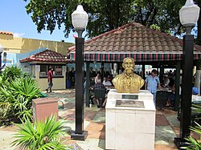 Little Havana's Domino Park on Calle Ocho | |
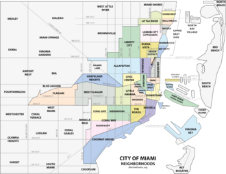 Little Havana neighborhood within the city of Miami | |
| Coordinates: 25°46′21.28″N 80°12′52.52″W / 25.7725778°N 80.2145889°W | |
| Country | United States |
| State | Florida |
| County | Miami-Dade |
| City | Miami |
| Government | |
| • City of Miami Commissioner | Rolando Escalona (R) |
| • Miami-Dade Commissioners | Vicki Lopez (R) |
| • State House | Vacant |
| • State Senate | Ileana Garcia (R) |
| • U.S. House | Maria Elvira Salazar (R) |
| Population (2010) | |
• Total | 76,163 |
| • Density | 21,815/sq mi (8,423/km2) |
| Time zone | UTC-05 (EST) |
| ZIP Code | 33125, 33126, 33128, 33130, 33135 |
| Area codes | 305, 786 |


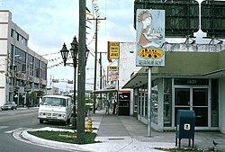

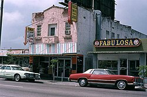

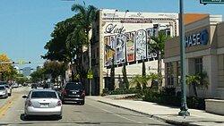
Little Havana (Spanish: Pequeña Habana) is a neighborhood of Miami, Florida, United States. Home to many Cuban exiles, as well as many immigrants from Central and South America, Little Havana is named after Havana, the capital and largest city in Cuba.
Little Havana is noted as a center of social, cultural, and political activity in Miami. Its festivals, including the Calle Ocho Festival, Viernes Culturales/Cultural Fridays, the Three Kings Parade and others, have been televised to millions of people every year on different continents. It is also known for its landmarks, including Calle Ocho (SW 8th Street/Tamiami Trail), and its Walk of Fame (for famous artists and Latin personalities, including Celia Cruz, Willy Chirino, Gloria Estefan, Thalía, Julio Iglesias, and Desi Arnaz), the Cuban Memorial Boulevard, Plaza de la Cubanidad, Domino Park, the Tower Theater, José Martí Park, the Firestone/Walgreens Building, St. John Bosco Catholic Church, Municipio de Santiago de Cuba and others.
Máximo Gómez Park, also known as Domino Park, is an integral part of Little Havana. Located on the historic Calle Ocho (8th Street) it is a place for Cuban immigrants to gather, drink coffee, smoke cigars, and play dominos. The park has also become a tourist destination, where non-Cubans can engage with immigrants.[1]
Little Havana is the best known Cuban exile neighborhood in the world. It is characterized by its street life, restaurants, music and other cultural activities, small business enterprises, political passion, and great warmth among its residents.[2]
In 2015, Little Havana was included in the National Trust for Historic Preservation's annual list of 11 Most Endangered Places.[3][4][5] In 2017, the Trust declared it a national treasure.
History
[edit]Origins
[edit]Originally a lower-middle-class Southern and thriving Jewish neighborhood in the 1930s,[6][7] "Little Havana" emerged in the 1960s as the concentration of Cubans in the area grew sharply. Today, "Little Havana" refers to the neighborhood lying immediately west of Downtown Miami, stretching west from the Miami River for roughly two and a half miles. This sobriquet was applied to the Shenandoah and Riverside neighborhoods in the 1960s, following the beginnings of a vast influx of Cuban refugees there. Little Havana is famous as the cultural and political capital of Cuban Americans, and the neighborhood is a center of the Cuban exile community.[2]
Cuban solidification
[edit]In the 1960s, the number of Cubans fleeing the Castro regime led the area to become a hotbed of counter-revolutionary activity.[8] Arriving residents expected their stay in Miami would be temporary, hoping Castro would be deposed. By 1970, the neighborhood was more than 85% Cuban; rather than return to Havana, where Castro remained in power, Cuban Americans began permanently settling in neighborhoods across Miami. Little Havana, however, remained the main landing point for new immigrants and a stronghold for Cuban-owned businesses.
Contemporary population
[edit]As of 2011, Little Havana boasts the highest concentration of Hispanics (98%) in Miami. Within the Hispanic population, the Cuban population has experienced a substantial decrease from 84% in 1979 to 58% in 1989; groups of Hispanics from other places, especially Nicaragua, Honduras, and other Central American countries, have substantially increased since the late 1990s.[9] Despite the increasing diversity, most neighborhood businesses are still Cuban-owned.[8]
Borders
[edit]- Western Border: Southwest 37th Avenue
- Eastern Border: Southwest 3rd Avenue
- Northern Border: Northwest 7th Street
- Southern Border: Southwest 22nd Street (Coral Way)
Demographics
[edit]As of 2000,[10] Little Havana had a population of 49,206 residents, with 19,341 households, and 11,266 families residing in the neighborhood. The median household income was $15,213.16. The ethnic makeup of the neighborhood was 85.08% Hispanic or Latino of any race (mainly Cubans, but also many Nicaraguans and Honduran Americans, as well as other Latinos), 3.79% Black or African American (not including Afro-Cubans, Afro-Nicaraguans, Afro-Hondurans, and other Afro-Latinos), 10.14% Non-Hispanic White, and 0.96% of other races.
South River Drive Historic District
[edit]South River Drive Historic District | |
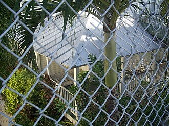 | |
Location within Miami | |
| Location | Little Havana, Miami, Florida |
|---|---|
| Area | 25 acres (100,000 m2) |
| NRHP reference No. | 87000671 |
| Added to NRHP | August 10, 1987 |


The South River Drive Historic District is a historic district within the City of Miami's Little Havana neighborhood. In 1987, the Miami City Commission (city council) created the locally designated district. Later that year, the National Park Service added the district to the National Register of Historic Places. Located on the eastern end of the neighborhood along the Miami River, the district is just west of Downtown Miami. The district includes 428, 438 Southwest 1st Street, 437 Southwest 2nd Street, 104, 109, 118 Southwest South River Drive. It contains 9 historic buildings.[11]
The South River Drive Historic District derives its significance from both its architectural and cultural history. Developed principally in the first two decades of the twentieth century, the historic district contains the city's oldest extant group of vernacular frame buildings near the Miami River.[12]
Riverview Historic District
[edit]Designated on April 7, 2015 by the Historic and Environmental Preservation Board, the Riverview Historic District is a city of Miami historic district located west of Downtown Miami within the Little Havana neighborhood.
The locally designated historic district comprises single and multi-family residences and commercial structures in the Bungalow, Mission, Mediterranean Revival, and Miami Modern styles of architecture.
Viernes Culturales
[edit]
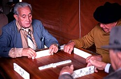
Viernes Culturales (English: Cultural Fridays) is an artistic, cultural, and social arts and culture fair that takes place on the last Friday of each month in the historic Little Havana neighborhood of Miami in the heart of Calle Ocho (8th St. SW between 14th and 17th Avenues).
The event consists of outdoor musical performances on a stage and along the sidewalks of Calle Ocho, art exhibits along the sidewalk and in plazas and open spaces, visits to art galleries and cultural centers, cuisine tasting at participating restaurants, and films, art exhibits, and educational programs at the historic Tower Theatre. Free walking tours, led by Miami historian Dr. Paul George leave from the Tower Theater at 7pm during each festival day.[13]
Churches
[edit]- St. John Bosco Catholic Church
- St. Barbara Old Catholic Church (schismatic)
- Holy Comforter Episcopal Church
- CHRIST'S NATION
- Ermita De Regla, Miami
- Soldiers of the Cross Evangelical Church
- Central Miami Spanish SDA Church
- Iglesia Metodista Tamiami
- MMM Pequeña Havana
- St. Michael the Archangel Catholic Church
- Conexion Divina Church
- Iglecia Cosecha de Cristo
- Shrine-St Philomena Catholic Church
- Ministerios Pentecostal Poder
- Ministeria Pentecostai Roca De
- St. Raymond of Peñafort Catholic Church
- Centro Cristiano Casablanca, 2000–2009, an Assemblies of God church that purchased the old Casablanca Banquet Hall and converted the building into a Christian church. Pastored by Dr. Eddie Rivero until the property was sold to El Rey Jesus Little Havana church which ultimately went into foreclosure.
Parks
[edit]- Máximo Gómez Park (better known as Domino Park), Calle Ocho
- Plaza de la Cubanidad
- Cuban Memorial Boulevard Park (SW 13th Avenue)
- Sewell Park
- Fern Isle Park
- Henderson Park
- Riverside Park
- Jose Marti Park
- Shenandoah Park
- Coral gate park
- Bryan Park
- Triangle park
Education
[edit]

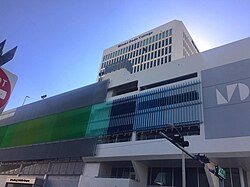

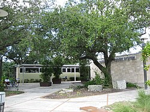
Miami-Dade County Public Schools runs area public schools. Schools within Little Havana include:
Public schools
[edit]Elementary schools
[edit]- Citrus Grove Elementary School
- Riverside Elementary School
- Auburndale Elementary School
- Shenandoah Elementary School
- Kensington Park Elementary School
- Ada Merritt K-8 Center
- Mater Academy East Charter Elementary School
- Lincoln-Martí Charter School
- St. Michael the Archangel Catholic School (Private School)
Middle schools
[edit]- Citrus Grove Middle School
- Shenandoah Middle School
- Ada Merritt K-8 Center
- SLAM Sports Leadership and Management Charter School
- International Studies Charter School
- Lincoln-Martí Charter School
- St. Michael the Archangel Catholic Church (Private School)
High schools
[edit]- Miami Senior High School, founded in 1903 (the oldest high school in Miami)
- Young Women's Preparatory Academy (all-girls)
- SLAM Sports Leadership and Management Charter School
- International Studies Charter School
- Lincoln-Martí Charter School
Colleges
[edit]- Miami Dade College- Eduardo Padrón Campus
Libraries
[edit]Miami-Dade Public Library operates all area public libraries:
- Hispanic Library
- Shenandoah Library

Cultural institutions
[edit]
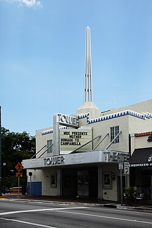

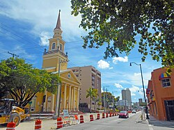
- L'Alliance Française de Miami, French language and cultural society
- La Società Dante Alighieri, Italian language and cultural society
Museums and memorials
[edit]- Bay of Pigs Museum and Library
- Bay of Pigs Monument
- Cuban Memorial Boulevard Park (SW 13th Avenue)
- Freedom Tower
Theaters and performance arts
[edit]- Tower Theatre, 1508 SW 8th St
- Manuel Artime Theatre, 900 SW 1st St
- Miami-Dade County Auditorium, 2901 W Flagler St
- Teatro 8, 2101 SW 8th St
- ArtSpoken Performing Arts Center, 529 SW 12th Ave
- Havanafama, 752 SW 10th Ave
- Teatro Avante, 744 SW 8th Street 2 Floor
Calle Ocho Festival
[edit]
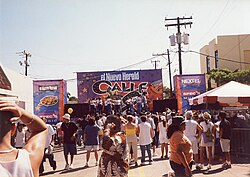
Little Havana hosts its annual Calle Ocho street festival (part of the overall Carnaval Miami celebration), one of the largest in the world, with over one million visitors attending Calle Ocho alone. It is a free street festival with a Caribbean carnival feel sponsored by the Kiwanis Club of Little Havana.
Calle Ocho is where different ethnic communities wear colors or flags representing pride in their heritage. Flags from Colombia to Nicaragua to Puerto Rico to Costa Rica and even Ireland flood the streets. Foods from different countries are usually present for purchase, and popular Latin music like reggaeton, salsa, bachata and merengue can be heard throughout the festival.
In 1977 tensions among Miami's different ethnic groups were running high. Eight Cuban-Americans, mostly from the Kiwanis of Little Havana, were trying to come up with ideas to address the situation. They considered a bicycle race on SW Eighth Street (Calle Ocho). It was turned down because the organizers feared that it would pit one ethnic group against another. Willy Bermello came up with the idea of doing something similar to the block parties and street festivals of Philadelphia. Calle Ocho was born.[14]
The festival takes place between 27th Ave and 4th Ave along Southwest 8th Street. Over 30 stages and hundreds of street vendors participate in the live music street festival now in its 4th decade. Calle Ocho earned an entry in the Guinness Book of World Records when 119,986 people formed the world's longest conga line on March 13, 1988.
In 2010, the Florida legislature identified the Calle Ocho-Open House 8 festival as the official state festival.[15]
Places of interest
[edit]
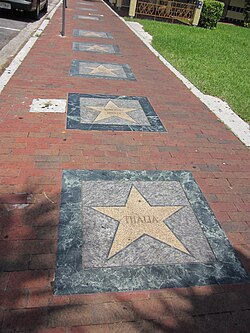
- Calle Ocho (SW 8th Street)
- Cuban Memorial Boulevard (SW 13th Avenue)
- Little Havana Visitors Center (1600 SW 10 Street)
- Centro Cultural Español de Cooperación Iberoamericana,
- Versailles Restaurant SW 8 Street and 36 Avenue
- Padilla Cigar Factory
- LoanDepot Park (former site of the Orange Bowl)
- Calle Ocho Walk of Fame (SW 8th Street between SW 12th Avenue and SW 17th Avenue)
- Little Havana Food & Cultural Tour,[16]
- Ball & Chain (1513 SW 8 Street) World Famous Live Music Bar & Lounge; originally opened in 1935
See also
[edit]References
[edit]- ↑ Whaley, Mirtha; Paul-Ward, Amy (2011). "Keeping Close to Home: The Ritual of Domino Playing Among Older Cuban Immigrants in Miami's "Little Havana"". Generations: Journal of the American Society on Aging. 35 (3): 22–27. ISSN 0738-7806. JSTOR 26555790.
- Jump up to: 1 2 "Archived copy". Archived from the original on July 4, 2018. Retrieved October 27, 2012.
{{cite web}}: CS1 maint: archived copy as title (link) - ↑ "America's Most Endangered Historic Places - National Trust for Historic Preservation". August 28, 2024.
- ↑ "Miami's Little Havana Endangered: Preservation Group". July 2015.
- ↑ "Preservation group says Little Havana endangered: Travel Weekly". www.travelweekly.com.
- ↑ "Little Havana". Flashback Miami. July 23, 2014. Retrieved April 13, 2018.
- ↑ "Little Havana looks to life after Castro - USATODAY.com". usatoday30.usatoday.com.
- Jump up to: 1 2 Vasilogambros, Matt (April 7, 2016). "Cuba, the Brand". The Atlantic. Retrieved October 20, 2017.
- ↑ "City of Miami - Neighborhood Enhancement Teams". Archived from the original on August 18, 2011. Retrieved July 18, 2011.
- ↑ "Demographics of Little Havana Miami, FL". miamigov.com. Archived from the original on May 17, 2008. Retrieved June 11, 2008.
- ↑ "National Register of Historical Places - FLORIDA (FL), Dade County". www.nationalregisterofhistoricplaces.com.
- ↑ "South River Drive Historic District" (PDF). Retrieved October 20, 2017.
- ↑ "An Arts & Culture Festival in Little Havana, Florida – Every last Friday of the month!". www.viernesculturales.org.
- ↑ Bernadette R Giacomazzo, "Calle Ocho Festival: The History of Little Havana's Most Famous Music Celebration" Latin Post, February 28, 2014
- ↑ "2008 Florida Statutes, Title IV, Chapter 15 section 15.0395". State of Florida. Retrieved May 19, 2011.
- ↑ "Little Havana Food Tours - Miami Food & Cultural Tours". Miamiculinarytours.com. Retrieved April 13, 2018.
External links
[edit]- Domino Park
- Little Havana at Miami Convention and Visitors Bureau

| Latino | |
|---|---|
| International | |
|---|---|
| National | |
| Other | |
- Neighborhoods in Miami
- Ethnic enclaves in the United States
- Cuban-American history
- Cuban-American culture in Miami
- Cuba–United States relations
- Tourist attractions in Miami
- Historic Jewish communities
- Historic districts on the National Register of Historic Places in Florida
- National Register of Historic Places in Miami